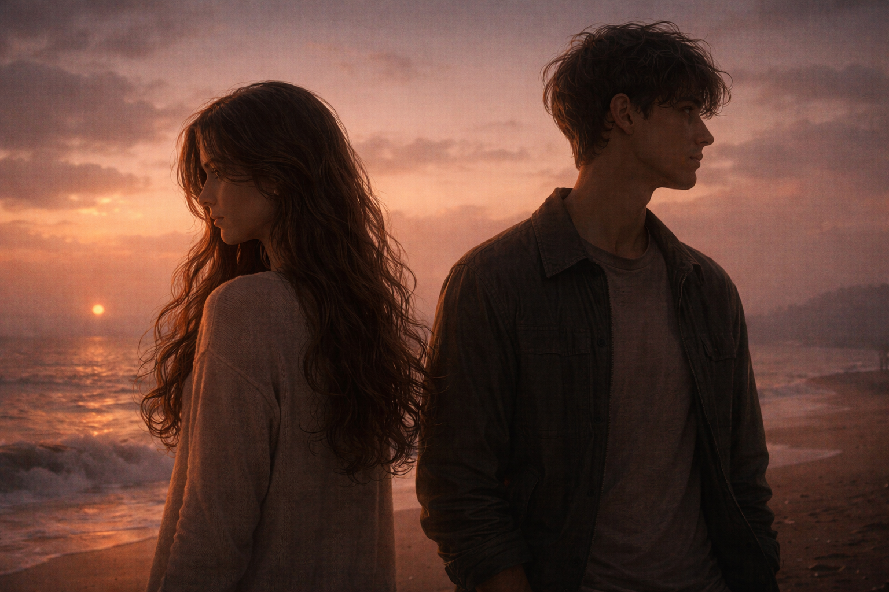

In twilight's hush, where silence falls, Lie echoes soft of unbuilt walls. The words I meant, but never gave, Now haunt me like a restless wave.
You stood so near-yet miles away, A heart unshared, a soul at bay. I watched the moment slip like sand, While fate moved on with open hand.
Regret, a ghost I know too well, It weaves its spell where memories dwell. Love, it bloomed but met no name, A fire unlit, a whispered flame.
The silence spoke what lips could not, A thousand truths that time forgot. Yet in that quiet, fierce and still, Lived all the strength of silent will.
Though seasons change and winds may bend, This ache, this bond, may never end. For some things live beyond the day Unspoken vows that will not sway.
Forever waits in shadow's grace, In dreams, in stars, in time's embrace. And if we meet by chance, or fate, Perhaps we'll speak-but not too late.